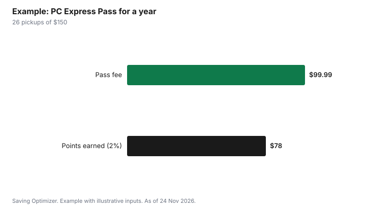

Food & Groceries · Canada
PC Express Subscribe and Save: Which Staples Are Worth Automating?

PC Express doesn't offer a subscribe-and-save discount. The closest thing is PC Express Pass: $99.99 a year or $9.99 a month for free pickup or delivery on orders of $35 or more, plus 2% back in PC Optimum points on pickup orders. Build a repeat list of staples you buy every one or two weeks, and add sale items by hand.
Key takeaways
- No subscribe-and-save discount at PC Express (checked 24 Nov 2026).
- PC Express Pass: $99.99 a year or $9.99 a month, plus tax.
- Free pickup or delivery on orders of $35 or more with the Pass.
- 2% back in PC Optimum points on eligible pickup orders.
- Example: 26 pickups of $150 earn $78 in points, nearly covering the Pass.
What the Pass includes
| Feature | Detail |
|---|---|
| Price | $99.99 a year or $9.99 a month, plus tax |
| Pickup or delivery | $0 on orders of $35 or more |
| Points | 2% back on eligible pickup orders |
| Rapid Delivery | $3 (otherwise $4.57) |
| Other | Free shipping at Shoppers Drug Mart and Joe Fresh, no minimum |
| Cancelling | Outside Quebec, at least 5 days before renewal |
What to automate
- Yes: pantry staples you use at a steady rate, like rice, oats, pasta, canned tomatoes, coffee and peanut butter.
- Yes: household basics, like toilet paper, dish soap and laundry detergent, if you track the unit price.
- Maybe: milk, eggs and bread, if your pickup day is fixed.
- No: meat and produce, where weekly flyer prices swing the most.
- No: anything you only buy on sale.

Does the Pass pay off?
Example: you pick up $150 of groceries every two weeks, 26 times a year. 2% back is $3 in points per order, or $78 a year, so the Pass costs you about $22 net, before any pickup fees you'd otherwise pay. Watch for first-year promo codes, which have been as low as $29.99 or less.
Compare services in PC Express vs Voila vs Instacart, and see how to maximize PC Optimum points.
Sources
- PC Express, Rapid Delivery page (PC Express Pass terms), checked 24 Nov 2026.
- PC Express, online grocery page (Pass perks: 2% back on pickup, free shipping at Shoppers and Joe Fresh), checked 24 Nov 2026.
- PC Express, Try PC Express (first-year Pass promo), checked 24 Nov 2026.
Frequently asked questions
Does PC Express have subscribe and save?
No. It has PC Express Pass, a subscription for free pickup or delivery, but no automatic discount on repeat items.
How much is PC Express Pass?
$99.99 a year or $9.99 a month, plus tax, when checked on 24 Nov 2026.
What is the minimum order for free pickup with the Pass?
$35 before taxes and fees.
Do I earn points with PC Express Pass?
Yes, 2% back in PC Optimum points on eligible pickup orders, plus regular offers.
How do I cancel PC Express Pass?
In your account under Manage subscription. Outside Quebec, cancel at least five days before renewal.
Researched and drafted with AI assistance and fact-checked against official Canadian sources. How we create content.
Note: Terms and promos change. Examples only. Education only.